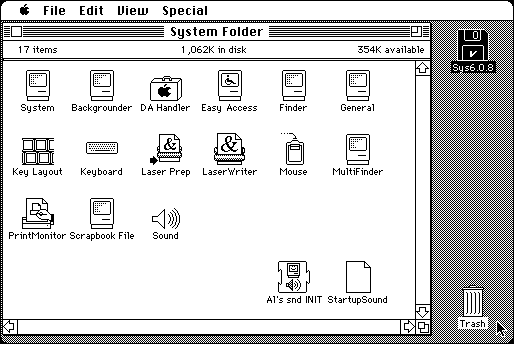

Download
sndINIT.zip (16K) Al’s snd INIT 1.0 repackaged into a zipped hfs disk image and checksum file. The disk image can be mounted with Mini vMac.
sndINIT.sit (12K) Al’s snd INIT 1.0 in the original format.
copyright: Al Staffieri Jr.
mod date: Jul 3, 1995
license: Freeware (shareware full version doesn't work on Mac Plus)
from url :
Al's Older Macintosh Software
A “System Extension (INIT) that will play a System 7 sound file or a file containing a 'snd ' resource whenever you start your computer.” For System 6.0.5 or better.

If you find these downloads useful, please consider helping the Gryphel Project, which hosts them.
Here are the md5 checksums for the downloads, signed with Gryphel Key 5:
--------- GRY SIGNED TEXT --------- 83f481fbcb071d63e4daa080edf0d60f sndINIT.zip 7420aa27152905bd85ada2e4b09dc46a sndINIT.sit ------- BEGIN GRY SIGNATURE ------- Gry/4Xa8CFcUzxdN/PCs4nZNiG/Wnb0/dl/IpAGLZOpvz14y5h5REbadnmitxJPR InaQlddxyYGSWrgn/pBbFz1RRtTtTyNTQp98ivkzyDDZ5P8TC8s8TitkscoWSj1y LcEcOjbwe+MPc4ph0QcpSXwriuZDr2YHhJwImmBx6/tjSQjCFE6HAuzzM/5SKxtR -------- END GRY SIGNATURE --------